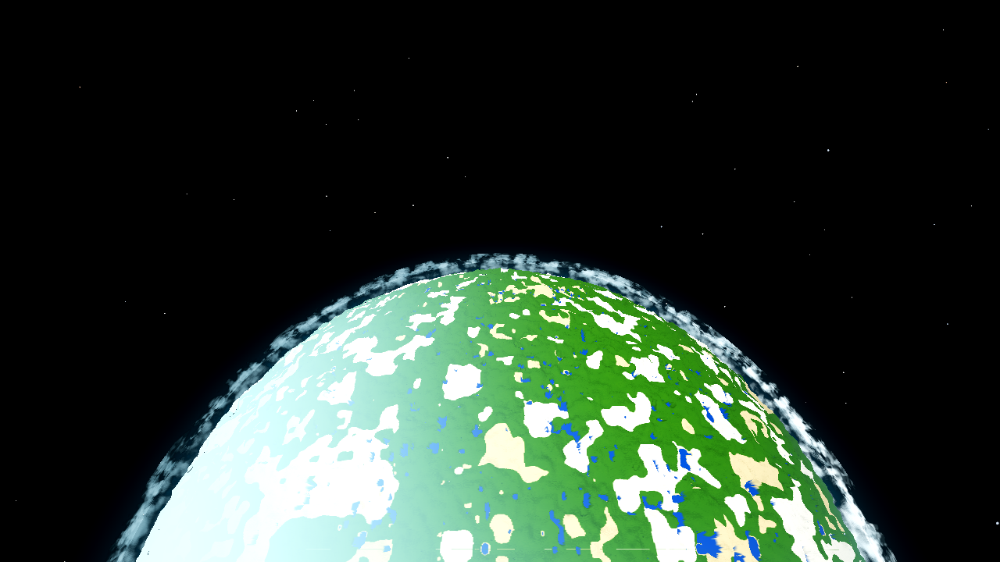
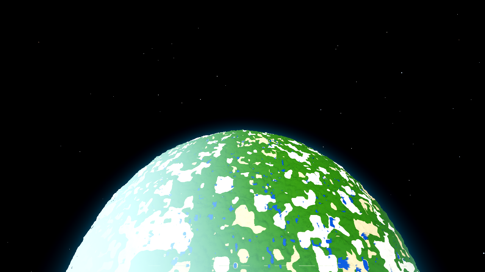
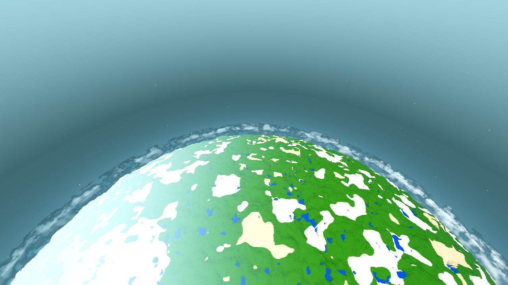
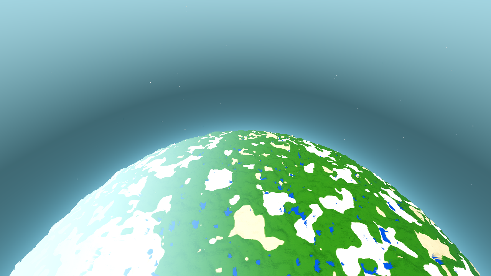
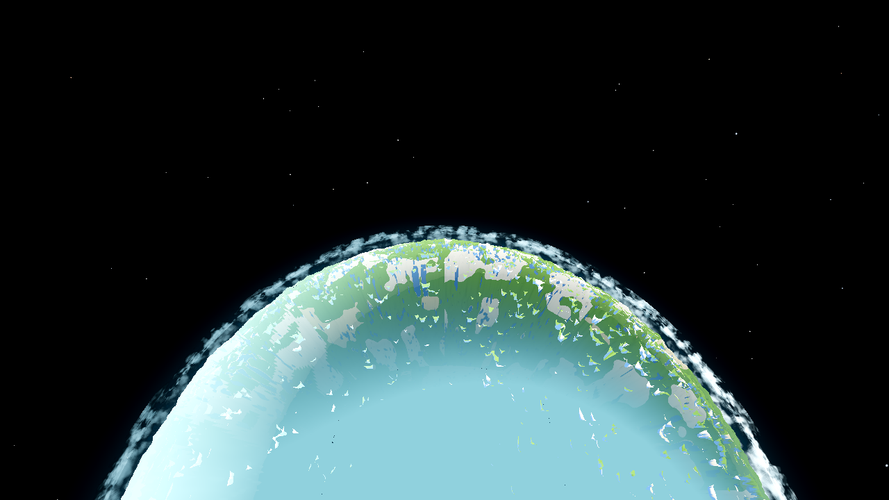
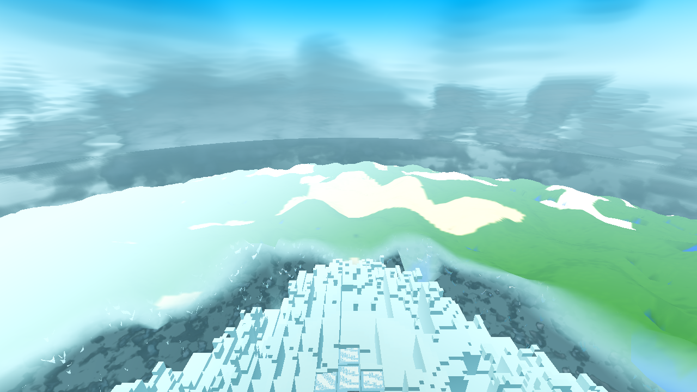

Status: the defect does NOT reproduce as recorded — the ticket shrinks to nothing fixable.
No code was changed, nothing ships behind a switch. Date 2026-10-09. Tree: HEAD
7eceb74 (game tree byte-identical to the AC-0411 winding fix 2196943;
the two commits since touch tasks/TASKS.yaml only). Engine 4.7.1, seed 44, standing user
config R24/F83 (fog_far=332.0 asserted per log), T=0.5 frozen, CLOUD_T0=411200 (the sustained-deck
state of every cloud round), 1280×720 Forward+ via lavapipe, planet preset,
1200-frame drain + 600 mid-drain step. Plan: plan.html.
2196943), and the
r19 assessment had already measured the attribution: the disc wash was byte-identical with clouds on
or off and vanished with SAT_BODY=0. On the current tree the disc shows the baked terrain,
the deck’s over-disc contribution in the sustained-deck state measures zero (not a flat
film — transparent, with the surface visible through the gaps, which is the No Man’s Sky
orbital read the assessment itself cites: “the clouds thin to scattered masses and gaps
revealing the surface below”), and the rim ring that remains carries real structure inside its own
pixels: a luminance spread of 68.0 at 2600 m and 35.5 at 1600 m — on the same
instrument ladder as the 700 m reference values (old flat deck 16.9, NMS reference 32.4, the volume
68.9 → 44.9 after lighting) — with bright masses and dark gaps (23 % of the 2600 m deck
pixels below luminance 60). The proposed cause (a fixed 24 view steps through a chord that grows with
distance) is not the cause of the recorded finding: at the shipped 24 steps the ring already resolves
mass structure from orbit, and the flat component of the recorded frames was the body. The near field
is untouched and re-verified (inside-annulus frame, §4).Five fresh renders on HEAD, all rc=0 inside the 1200 s budget, Forward+ boot line
asserted in every log, SNAP lines + file existence checked, no SNAP FAIL
(never AWECRAFT_LOGIC on any render). The three cloud-on frames are byte-identical
(sha256) to the AC-0411 after-frames rendered on the same game tree
(ac0413-before-2600.png = tasks/AC-0411/ac0411-final-2600-t050.png,
...-2600-cloudsoff.png = its clouds-off twin, ...-1600.png =
ac0411-final-1600-t050.png) — the recipe reproduces the shipped state exactly, and
the settle check holds (the 2600 m _s600 companion differs from the final in zero pixels
at the ≥8 level: settled by frame 600, as r19 recorded).
| frame | wall | budget | exit | note |
|---|---|---|---|---|
ac0413-before-2600.png | 879 s | 1200 s | 0 | sha256 = AC-0411 after frame |
ac0413-before-2600-cloudsoff.png | 502 s | 1200 s | 0 | sha256 = AC-0411 clouds-off twin |
ac0413-before-1600.png | 773 s | 1200 s | 0 | sha256 = AC-0411 1600 m frame |
ac0413-before-1600-cloudsoff.png | 406 s | 1200 s | 0 | fresh pair (none existed from that round) |
ac0413-before-inside-200.png | 1191 s | 1200 s | 0 | inside the annulus (camera radial 4341 ∈ [4275, 4450]) — new wall-high, see §6 |
Instrument: the AC-0384 analyze2.py band statistics, extended with the DECK MASK
— the pixels where ON-minus-OFF max-channel diff ≥ 8, i.e. the pixels the layer owns —
and the ON luminance spread inside that mask (analyze_ac0413.py, pure stdlib, re-runnable).
At 1600–2600 m the deck owns only 3–6 % of the frame (the rim band), so a fixed
horizontal-band std like the 700 m lower_mid one would be contaminated by terrain and sky;
the mask is the honest equivalent — the same quantity (the luminance spread across the
layer’s own pixels), the comparable number.
| deck coverage | spread (lum std of the layer’s own pixels) | p10 / p50 / p90 | min / max | dark (<60 lum) share | disc-centre ON vs OFF | |
|---|---|---|---|---|---|---|
| 2600 m (before = shipped state) | 3.09 % of frame (the rim ring) | 68.0 | 35.5 / 121.2 / 225.8 | 13.9 / 255.0 | 22.95 % | byte-identical: mean RGB (117.2, 190.6, 118.3), std 43.5 both |
| 1600 m (before = shipped state) | 5.79 % of frame (ring + the band crossing the disc) | 35.5 | 110.5 / 137.4 / 201.9 | 95.9 / 253.3 | 0 % | byte-identical: mean RGB (124.3, 197.0, 135.1), std 39.6 both |
| Reference ladder on the same instrument, 700 m (the deck-band band): old flat deck 16.9 — NMS reference 32.4 — the volume first built 68.9 — settled 44.9 after the lighting pass (AC-0405/AC-0406/AC-0407). | ||||||
Before and after at 1600 and 2600 m: before = after, because no change was made — the numbers above are the state that ships, and they are not the recorded defect: the spread at 2600 m (68.0) sits at the TOP of the recorded ladder (the 68.9 the volume reached on first build), and the 1600 m value (35.5) is above the NMS reference (32.4) and double the old flat deck (16.9). A flat tinted ring would show a narrow spread over its own pixels; these masks span 13.9–255 and 95.9–253 with a p10:p90 ratio ≈ 1:4. The disc-centre delta being exactly nil (not “nearly invisible” but nil) in the sustained-deck state means the layer there is transparent — partly-cloudy weather with the surface visible through the gaps — not a saturated uniform in-scatter film, which is the mechanism D-26-2 described (“the base saturates the raymarch into a uniform in-scatter”). That mechanism is not present in the current tree.
 |
 |
| 2600 m — clouds ON: the puffy rim ring with masses and dark gaps over the baked-terrain disc | 2600 m — clouds OFF: the limb halo; the disc is identical (the deck owns nothing over it in this state) |
 |
 |
| 1600 m — clouds ON: the ring plus the cloud band crossing in front of the disc’s lower-left limb | 1600 m — clouds OFF: the same view without the deck (the fresh pair for this ticket) |
The ticket’s caution turned out to be the ticket. The finding frames (r19, r21) came from the inverted-winding tree; the r19 assessment had already separated the components, and this round re-measures the fixed side of that separation:
SAT_BODY=0 (so the
body). AC-0411 fixed the winding; the disc now shows the baked terrain (the green continent, snow,
water in §2’s frames). |
|
| r21 (inverted winding): the flat air-coloured disc wash — the body’s underside under the deck | current tree: baked terrain over the disc, the deck’s structured rim ring |
ac0413-before-inside-200.png (camera 200 m above the spawn surface, inside the virtual
annulus [4275, 4450] — 66 m above the cloud base): the layer fills the view as a bright opaque
volume with soft internal structure (lit masses, darker gaps), the sky above reads as the cyan
layer-top, and the terrain below is visible through the translucent layer — the same character as
the r19 inside-200 reference (tasks/AC-0384/ac0384-r19-inside-200.png) and the AC-0407
r300 ticket frame, with the fog-wall partition (AC-0401) making the terrain band read slightly cleaner
than in the r19 reference (a shipped improvement, not a regression). Band statistics on the same
instrument: the top band is the bright layer/sky (lum mean 198.0), the cloud-interior bands run
183–210 with spread 30–50 — a soft filled volume, not a flat sheet. The
user-verified near-field property (120 m / inside / ground) is untouched: no code was changed at
all — the three-shell OFF path, the volume branch, the skyline profile, the lighting, the
fog-wall partition and the body’s winding are all byte-identical to HEAD.

| gate | result | exit status |
|---|---|---|
G0 (--headless --quit + gate_census.py) | SCRIPT ERROR 0, SHADER ERROR 0 | rc=0 (no signal-11; the clean-log UAF trap checked) |
SMOKE battery (player;interact;light;fluids;genhash) | ok:true — player 142.42/0, interact ok, light 15/0/14/0→9, fluids 1719/320 & 25/9, total 281 s; census 0/0 | rc=0 |
| PROBE | N/A — the spec defines no probe arm (the AC-0407 precedent); the renders are the acceptance | — |
genhash (battery arm + the 25 GENHASH lines diffed) | 25/25 byte-identical to the AC-0405/AC-0406 standing references (the AC-0403-era set; no generation code has moved since) | inside rc=0 battery |
| shaderforce (every shipped shader forced through the live Forward+ renderer) | ok, 12/12, cloud_layer.gdshader 32/32 params, census 0/0, Forward+ boot line present | rc=0 |
| RENDERS (the acceptance) | 5/5 frames, walls in §1, Forward+ boot line + SNAP + file existence per run; the 2600 m settle check (≥8 diff: 0 pixels between the 600-frame and 1200-frame captures) | rc=0 × 5 |
All runs: one godot at a time (pgrep before every call), HOME=/tmp/dsh_home,
absolute engine path, 20 GB address-space cap, logs in .scratch/AC-0413/
(g0.log, smoke.log, shaderforce.log,
frames/*.log, before_driver.log). The tree’s dirty fence files
(main.gd, game.gd, debug.gd, drop.gd — another
session’s particle-pool/snap-diagnostic work) were left untouched and present in every run; the
SMOKE battery passes with them in place.
Zero added cost — no change ships. The ticket’s cost constraint (walls 830–980 s against the 1200 s budget) is reported as measured by this round: 502–879 s for the altitude pair, and 1191 s for the inside-annulus 200 m frame — the new wall-high, inside the budget with only ~1 % headroom. For the coordinator: any future ticket that re-shoots the inside-annulus frame at 200 m should plan the full 1200 s (the 300 m frame ran 976 s in AC-0407; the lower camera pays in full-sky chords). Nothing was traded — no step count, no light tap, no resolution, no structure.
u_vol_steps in
cloud_layer.gdshader vmarchseg) is the one to test there — the plan
for that case is preserved in plan.html.TASKS.yaml edit
(fences); no fence-file edits.Captures in this folder: ac0413-before-2600.png (+ -cloudsoff,
_s600), ac0413-before-1600.png (+ -cloudsoff,
_s600), ac0413-before-inside-200.png (+ _s600).
Logs and the instrument: .scratch/AC-0413/ (analyze_ac0413.py re-runs the
§2 table; an2600.json, an1600.json, an200.json are the raw
outputs; genhash_new.txt vs genhash_ref_0405/0406.txt are the 25/25 diff).
Continuity: tasks/AC-0413/continuity.md.